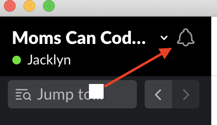
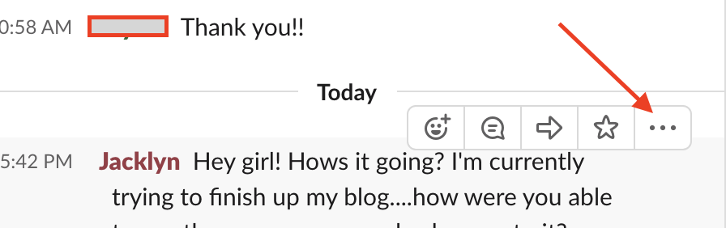

So you’ve decided to try out Slack as a means of communication? Slack is essentially a message board to be used by any size group as a means to stay up to date on projects and meeting. It is incredibly user friendly and well laid out. With that being said, there are few things that will help make Slack work for you.
Once you’ve created an account, oriented yourself with the layout, and gotten comfortable with each window; now what? Check out my top five pro tips to optimizing you usage of Slack.


Pro Tips:
Top left bell icon-Start with the bell!
You can adjust a lot of settings there to create a space that is most apt for productivity. You can also ‘pause’ your notifications for a customizable timeframe to maintain a distraction free environment.

The ‘+’ next to Direct Messages-Press it!
This will enable you to create a custom direct message with anyone in the group. Working on a team project? Set up a chat for just you to brainstorm and plan. Too shy to post a question in the main board? Direct message to get those answers.
Starring-Don’t lose the important stuff!
The star power, as I call it, can be applied to most things on Slack. This allows you to keep things of value to you in one location. (top right corner) If you no longer need something, unstar.
Search Bar-Find it quick!
Looking for a Zoom meeting and can’t remember where you saw it? No need to get flustered scrolling through posts. Top right search bar to the rescue.
Reminders- Don’t forget it!
See something you want to look over again at a specific time? Hit those three dots on the right of the post and click, “Remind me about this” and choose a time. This is a great option when you’re right in the middle of something and need to come back to a post.

Bonus Tip: Another way to keep track of important info is to simply send it to yourself in a message. You can also write down your tasks to be completed and then simply “like” it when you’ve completed it.